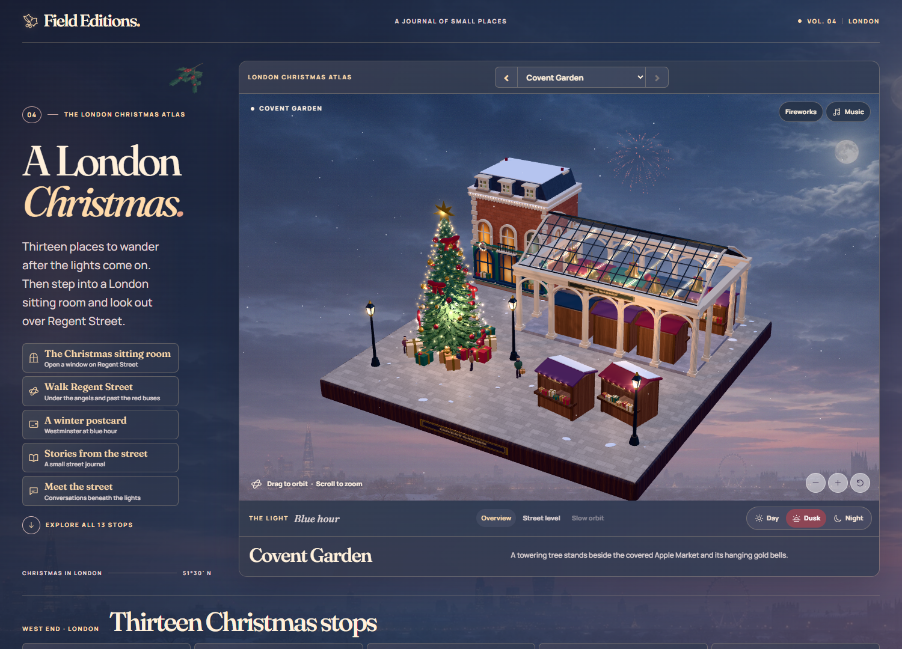
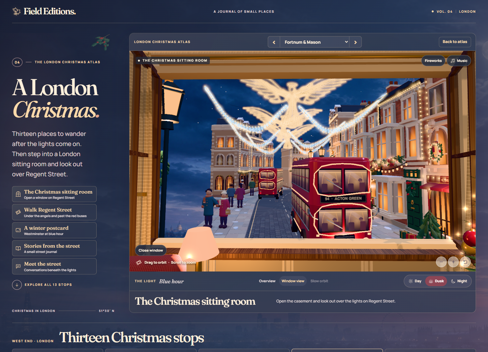
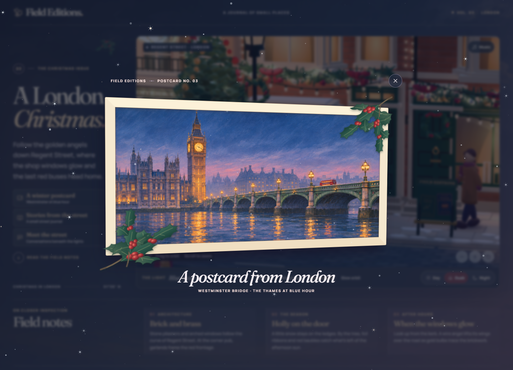

泽菲拉的作品集
设计理念
把伦敦圣诞做成一本可以走进去的生活方式杂志。13 处地标各自缩成一座方形街景，保留辨识度最高的建筑轮廓和节日陈设。俯瞰时像翻看城市图册，镜头降到街面，就能从双层巴士旁仰看摄政街的天使灯。
同一座街区用三档光线呈现。白天的斜阳照出砖墙和石雕的纹理，夜里的橱窗与串灯把视线带到街角。点长椅收到一张明信片，或在客厅推窗看雪，让探索从知名地标延伸到可以停留的小场景。
项目工作
体验策划和美术指导涵盖地标选择、场景布置、昼夜光影与镜头动线。用 Codex 辅助实现 WebGL 交互原型，部分场景纹理和明信片插画用 ImageGen 生成。
街景、窗景与明信片


